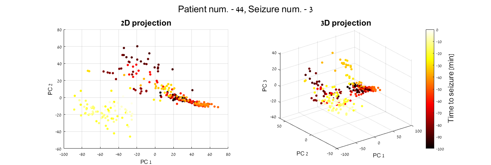
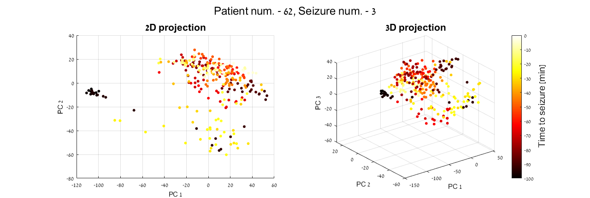
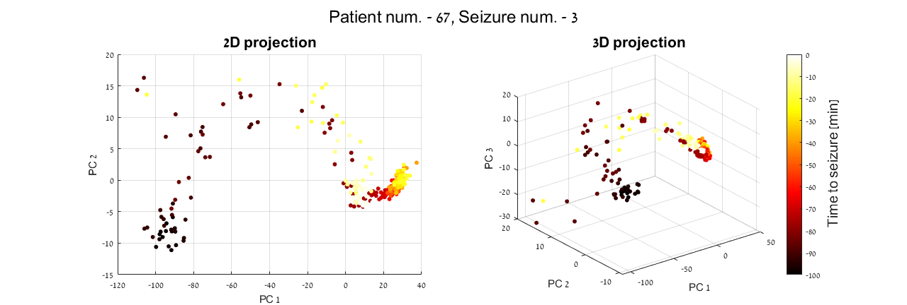
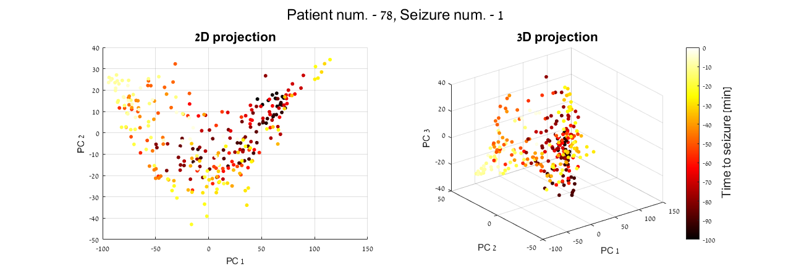

Contents
clear; close all; clc;
Extract and filter file names
fileNames = dir('..\DATA_DIR\*'); % extract all files data filenames = {fileNames.name}; % extract all files names % save the places of file names which doesn't match requirement, and filter % them out not_match = cellfun(@isempty, regexp(filenames,'p\d+_s\d+.mat')); filenames = filenames(~not_match); % extract patient and seizure numbers nums_Pati_Seiz = regexp(filenames,'\d*','match');
Analysis parameter
nSubj = length(filenames); % number of subjects fs = 250; % frequency sample rate windInSec = 40; % time window to split into segments overlapInSec = 20; % time window to be overlapped within segments window = windInSec*fs; overlap = overlapInSec*fs; welchWindSec = 2; % time window to be calculated by Welch's method welchOLSec = 1; % time window to be overlapped within calculation Wwindow = welchWindSec*fs; Woverlap = welchOLSec*fs; Hz = 1:0.5:40; % total frequency range % frequencies split into bands freqs = struct('delta', [1 4.5], ... 'theta', [4.5 8], ... 'Lalpha', [8 11.5], ... 'Halpha', [11.5 15], ... 'beta', [15 30], ... 'gamma', [30 40]); covMat = cell(nSubj,1); % preallocation of variable for covariance matrices eigVec = cell(nSubj,1); % preallocation of variable for eigenvectors eigVal = cell(nSubj,1); % preallocation of variable for eigenvalues
Preprocess, PCA and plot loop by subject
for n = 1:nSubj
Load data
Data.(sprintf('Sub_%d',str2double(nums_Pati_Seiz{n}{1,1}))) = load(['..\DATA_DIR\' filenames{n}]);
Preprocess
All_Data.(sprintf('Sub_%d',str2double(nums_Pati_Seiz{n}{1,1}))) = ... Signal(Data.(sprintf('Sub_%d',str2double(nums_Pati_Seiz{n}{1,1}))).data, window, overlap, Wwindow, Woverlap, fs, Hz, freqs);
PCA
extract data from struct to matrix
subjMat = All_Data.(sprintf('Sub_%d',str2double(nums_Pati_Seiz{n}{1,1}))); % find the mean of each feature meanSubj.(sprintf('Sub_%d',str2double(nums_Pati_Seiz{n}{1,1}))) = mean(subjMat,2); % normalize each feature by subtracting its mean from itself subjMat = subjMat - meanSubj.(sprintf('Sub_%d',str2double(nums_Pati_Seiz{n}{1,1}))); % create covariance matrix according to formula covMat{n} = (subjMat * subjMat')/(size(subjMat,2) - 1); % find 3 biggest eigenvalues and corresponding eigenvectors [eigVec{n}, eigVal{n}] = eigs(covMat{n}, 3); % compress data from 342 dimensions into 3 dimensions VisualFeatures = eigVec{n}'*subjMat;
Plot
figure('units', 'normalized', 'Position', [0 0.2 1 0.6]); hold on; sgtitle(['Patient num. - ' nums_Pati_Seiz{n}{1,1} ', Seizure num. - ' nums_Pati_Seiz{n}{1,2}], 'FontSize', 18); c = linspace(-100,0,length(VisualFeatures(1,:))); colormap(hot); subplot(1,2,1); scatter(VisualFeatures(1,:),VisualFeatures(2,:), 20, c, 'filled'); title('2D projection', 'FontSize', 16); xlabel('PC 1'); ylabel('PC 2'); grid ON; subplot(1,2,2); scatter3(VisualFeatures(1,:),VisualFeatures(2,:), VisualFeatures(3,:), 20, c, 'filled'); title('3D projection', 'FontSize', 16); xlabel('PC 1'); ylabel('PC 2'); zlabel('PC 3'); c = colorbar; c.Label.String = '\fontsize{15} Time to seizure [min]';   
end